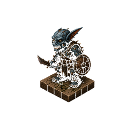

Cena I — Diálogo NPC (existente)
Gregoras Pellos bloqueia a porta da estalagem com o ombro. A luz das velas projeta sombras longas pelo salão. Sua voz é baixa, mas carrega o peso de quem já enterrou companheiros nas Blackwoods.

Gregoras Pellos
"Antes de entrar lá, você precisa saber: os espantalhos não dormem. Nunca. Fique no caminho iluminado e não pare de se mover."

Cena II — Fala do Jogador via botão "Falar" (novo)
Tuprix ouve as palavras de Gregoras em silêncio. Então olha para o grupo reunido ao redor da mesa e respira fundo antes de falar.
Tuprix 📢 GRITO
"Eu vou matar todo mundo lá dentro! Pode me chamar de louco, mas é o que vai acontecer!"
Tuprix 💬 DIZ
"Gregoras, você vai nos guiar ou fica aqui bebendo enquanto a gente faz o trabalho?"
Gregoras Pellos
"Pago adiantado. E se você morrer lá dentro, não culpe a mim."
Cena III — Card de Teste Integrado (novo)
Tuprix
Eu saco minha espada e corro em direção ao espantalho mais próximo pra atacar ele com um golpe de baixo pra cima
Tuprix arremessa seu manto para o lado e avança pelo campo de milho seco. O espantalho gira devagar na estaca, mas seus olhos de brasa já o rastrearam.
Golpe de baixo pra cima
1.
ACERTO
16+3=19 CD13

▶ Ver resultado
A lâmina rasga o torso de palha. Faíscas de magia negra escapam pelo corte enquanto o espantalho cambaleia:
Tuprix → Espantalho 1
Golpe certeiro rasga o tronco de palha — 9 de dano cortante. O espantalho gira e lança um braço afiado de volta.
Cena IV — Múltiplos Testes numa ação complexa
Tuprix
Corro pelas barracas, salto por cima do balcão derrubado e arremesso minha adaga nas costas do kobold antes que ele escape!
Três obstáculos entre Tuprix e sua presa. Cada segundo conta — o kobold azul já está metade do caminho até a saída.
Perseguição + arremesso
1.
ACERTO
14+2=16 CD10
2.
ACERTO
11+2=13 CD12
3.
FALHA
4+2=6 CD15

▶ Ver resultado
Tuprix voa pelo mercado — desvio perfeito das barracas, salto limpo por cima do balcão. Mas a adaga sai torta, range no peitoril de pedra e some tilintando no beco. O kobold olha para trás com um sorriso torto e dobra a esquina.
Cena V — Ataque por Surpresa (costas)
Tuprix
Me esgueiro pelas sombras e pego o esqueleto lanceiro pelas costas antes que ele perceba minha presença
Furtividade + golpe surpresa
1.
ACERTO
17+2=19 CD12
2.
ACERTO
13+3=16 CD14

▶ Ver resultado
Passos silenciosos. Sombra perfeita. O esqueleto não farejou nada até a lâmina já estar no meio da coluna vertebral.
Tuprix → Esqueleto Lanceiro SURPRESA!
Golpe pelas costas — 14 de dano esmagador. Vértebras estalam. Esqueleto cai em pedaços antes de reagir.

Silêncio. Ossos dispersos no piso de pedra. Nenhum grito, nenhum aviso dado. Tuprix continua avançando pela cripta.